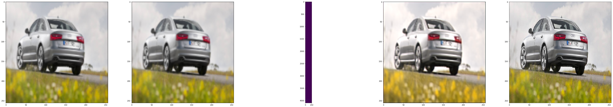

Image Super Resolution using Autoencoders
Task 1: Project Overview and Import Libraries
1 2 3 from tensorflow.keras.layers import Input, Dense, Conv2D, MaxPooling2D, Dropout, Conv2DTranspose, UpSampling2D, addfrom tensorflow.keras.models import Modelfrom tensorflow.keras import regularizers
Task 2: Build the Encoder
Credit: Autoencoder Schema by Francois Chollet, 2016 .
1 2 3 4 5 6 7 8 9 10 11 input_img = Input(shape=(256 , 256 , 3 )) l1 = Conv2D(64 , (3 , 3 ), padding='same' , activation='relu' , activity_regularizer=regularizers.l1(10e-10 ))(input_img) l2 = Conv2D(64 , (3 , 3 ), padding='same' , activation='relu' , activity_regularizer=regularizers.l1(10e-10 ))(l1) l3 = MaxPooling2D(padding='same' )(l2) l3 = Dropout(0.3 )(l3) l4 = Conv2D(128 , (3 , 3 ), padding='same' , activation='relu' , activity_regularizer=regularizers.l1(10e-10 ))(l3) l5 = Conv2D(128 , (3 , 3 ), padding='same' , activation='relu' , activity_regularizer=regularizers.l1(10e-10 ))(l4) l6 = MaxPooling2D(padding='same' )(l5) l7 = Conv2D(256 , (3 , 3 ), padding='same' , activation='relu' , activity_regularizer=regularizers.l1(10e-10 ))(l6) encoder = Model(input_img, l7)
Model: "model"
_________________________________________________________________
Layer (type) Output Shape Param #
=================================================================
input_1 (InputLayer) [(None, 256, 256, 3)] 0
_________________________________________________________________
conv2d (Conv2D) (None, 256, 256, 64) 1792
_________________________________________________________________
conv2d_1 (Conv2D) (None, 256, 256, 64) 36928
_________________________________________________________________
max_pooling2d (MaxPooling2D) (None, 128, 128, 64) 0
_________________________________________________________________
dropout (Dropout) (None, 128, 128, 64) 0
_________________________________________________________________
conv2d_2 (Conv2D) (None, 128, 128, 128) 73856
_________________________________________________________________
conv2d_3 (Conv2D) (None, 128, 128, 128) 147584
_________________________________________________________________
max_pooling2d_1 (MaxPooling2 (None, 64, 64, 128) 0
_________________________________________________________________
conv2d_4 (Conv2D) (None, 64, 64, 256) 295168
=================================================================
Total params: 555,328
Trainable params: 555,328
Non-trainable params: 0
_________________________________________________________________Task 3: Build the Decoder to Complete the Network
1 2 3 4 5 6 7 8 9 10 11 12 13 14 15 16 from tensorflow.keras.layers import Input, Dense, Conv2D, MaxPooling2D, Dropout, Conv2DTranspose, UpSampling2D, addfrom tensorflow.keras.models import Modelfrom tensorflow.keras import regularizersinput_img = Input(shape=(256 , 256 , 3 )) l1 = Conv2D(64 , (3 , 3 ), padding='same' , activation='relu' , activity_regularizer=regularizers.l1(10e-10 ))(input_img) l2 = Conv2D(64 , (3 , 3 ), padding='same' , activation='relu' , activity_regularizer=regularizers.l1(10e-10 ))(l1) l3 = MaxPooling2D(padding='same' )(l2) l3 = Dropout(0.3 )(l3) l4 = Conv2D(128 , (3 , 3 ), padding='same' , activation='relu' , activity_regularizer=regularizers.l1(10e-10 ))(l3) l5 = Conv2D(128 , (3 , 3 ), padding='same' , activation='relu' , activity_regularizer=regularizers.l1(10e-10 ))(l4) l6 = MaxPooling2D(padding='same' )(l5) l7 = Conv2D(256 , (3 , 3 ), padding='same' , activation='relu' , activity_regularizer=regularizers.l1(10e-10 ))(l6)
1 2 3 4 5 6 7 8 9 10 11 12 13 14 15 16 17 18 19 20 21 22 23 24 25 l8 = UpSampling2D()(l7) l9 = Conv2D(128 , (3 , 3 ), padding='same' , activation='relu' , activity_regularizer=regularizers.l1(10e-10 ))(l8) l10 = Conv2D(128 , (3 , 3 ), padding='same' , activation='relu' , activity_regularizer=regularizers.l1(10e-10 ))(l9) l11 = add([l5, l10]) l12 = UpSampling2D()(l11) l13 = Conv2D(64 , (3 , 3 ), padding='same' , activation='relu' , activity_regularizer=regularizers.l1(10e-10 ))(l12) l14 = Conv2D(64 , (3 , 3 ), padding='same' , activation='relu' , activity_regularizer=regularizers.l1(10e-10 ))(l13) l15 = add([l14, l2]) decoded = Conv2D(3 , (3 , 3 ), padding='same' , activation='relu' , activity_regularizer=regularizers.l1(10e-10 ))(l15) autoencoder = Model(input_img, decoded) autoencoder_hfenn = Model(input_img, decoded)
Model: "model_1"
__________________________________________________________________________________________________
Layer (type) Output Shape Param # Connected to
==================================================================================================
input_2 (InputLayer) [(None, 256, 256, 3) 0
__________________________________________________________________________________________________
conv2d_5 (Conv2D) (None, 256, 256, 64) 1792 input_2[0][0]
__________________________________________________________________________________________________
conv2d_6 (Conv2D) (None, 256, 256, 64) 36928 conv2d_5[0][0]
__________________________________________________________________________________________________
max_pooling2d_2 (MaxPooling2D) (None, 128, 128, 64) 0 conv2d_6[0][0]
__________________________________________________________________________________________________
dropout_1 (Dropout) (None, 128, 128, 64) 0 max_pooling2d_2[0][0]
__________________________________________________________________________________________________
conv2d_7 (Conv2D) (None, 128, 128, 128 73856 dropout_1[0][0]
__________________________________________________________________________________________________
conv2d_8 (Conv2D) (None, 128, 128, 128 147584 conv2d_7[0][0]
__________________________________________________________________________________________________
max_pooling2d_3 (MaxPooling2D) (None, 64, 64, 128) 0 conv2d_8[0][0]
__________________________________________________________________________________________________
conv2d_9 (Conv2D) (None, 64, 64, 256) 295168 max_pooling2d_3[0][0]
__________________________________________________________________________________________________
up_sampling2d (UpSampling2D) (None, 128, 128, 256 0 conv2d_9[0][0]
__________________________________________________________________________________________________
conv2d_10 (Conv2D) (None, 128, 128, 128 295040 up_sampling2d[0][0]
__________________________________________________________________________________________________
conv2d_11 (Conv2D) (None, 128, 128, 128 147584 conv2d_10[0][0]
__________________________________________________________________________________________________
add (Add) (None, 128, 128, 128 0 conv2d_8[0][0]
conv2d_11[0][0]
__________________________________________________________________________________________________
up_sampling2d_1 (UpSampling2D) (None, 256, 256, 128 0 add[0][0]
__________________________________________________________________________________________________
conv2d_12 (Conv2D) (None, 256, 256, 64) 73792 up_sampling2d_1[0][0]
__________________________________________________________________________________________________
conv2d_13 (Conv2D) (None, 256, 256, 64) 36928 conv2d_12[0][0]
__________________________________________________________________________________________________
add_1 (Add) (None, 256, 256, 64) 0 conv2d_13[0][0]
conv2d_6[0][0]
__________________________________________________________________________________________________
conv2d_14 (Conv2D) (None, 256, 256, 3) 1731 add_1[0][0]
==================================================================================================
Total params: 1,110,403
Trainable params: 1,110,403
Non-trainable params: 0
__________________________________________________________________________________________________1 autoencoder.compile (optimizer='adadelta' , loss='mean_squared_error' )
Task 4: Create Dataset and Specify Training Routine
1 2 3 4 5 6 7 8 9 10 11 12 13 14 15 16 17 18 19 20 21 22 23 24 25 26 27 28 29 30 31 32 33 34 35 36 37 38 39 40 41 42 43 44 45 46 47 48 49 50 51 52 53 54 55 56 57 58 59 60 61 import osimport refrom scipy import ndimage, miscfrom skimage.transform import resize, rescalefrom matplotlib import pyplotimport numpy as npdef train_batches (just_load_dataset=False ): batches = 256 batch = 0 batch_nb = 0 max_batches = -1 ep = 4 images = [] x_train_n = [] x_train_down = [] x_train_n2 = [] x_train_down2 = [] for root, dirnames, filenames in os.walk("/home/rhyme/Desktop/Project/data/cars_train" ): for filename in filenames: if re.search("\.(jpg|jpeg|JPEG|png|bmp|tiff)$" , filename): if batch_nb == max_batches: return x_train_n2, x_train_down2 filepath = os.path.join(root, filename) image = pyplot.imread(filepath) if len (image.shape) > 2 : image_resized = resize(image, (256 , 256 )) x_train_n.append(image_resized) x_train_down.append(rescale(rescale(image_resized, 0.5 ), 2.0 )) batch += 1 if batch == batches: batch_nb += 1 x_train_n2 = np.array(x_train_n) x_train_down2 = np.array(x_train_down) if just_load_dataset: return x_train_n2, x_train_down2 print ('Training batch' , batch_nb, '(' , batches, ')' ) autoencoder.fit(x_train_down2, x_train_n2, epochs=ep, batch_size=10 , shuffle=True , validation_split=0.15 ) x_train_n = [] x_train_down = [] batch = 0 return x_train_n2, x_train_down2
Task 5: Load the Dataset and Pre-trained Model
1 x_train_n, x_train_down = train_batches(just_load_dataset=True )
/home/rhyme/.local/lib/python2.7/site-packages/skimage/transform/_warps.py:105: UserWarning: The default mode, 'constant', will be changed to 'reflect' in skimage 0.15.
warn("The default mode, 'constant', will be changed to 'reflect' in "
/home/rhyme/.local/lib/python2.7/site-packages/skimage/transform/_warps.py:110: UserWarning: Anti-aliasing will be enabled by default in skimage 0.15 to avoid aliasing artifacts when down-sampling images.
warn("Anti-aliasing will be enabled by default in skimage 0.15 to "
/home/rhyme/.local/lib/python2.7/site-packages/skimage/transform/_warps.py:24: UserWarning: The default multichannel argument (None) is deprecated. Please specify either True or False explicitly. multichannel will default to False starting with release 0.16.
warn('The default multichannel argument (None) is deprecated. Please '1 autoencoder.load_weights("/home/rhyme/Desktop/Project/data/sr.img_net.mse.final_model5.no_patch.weights.best.hdf5" )
Task 6: Model Predictions and Visualizing the Results
1 encoder.load_weights('/home/rhyme/Desktop/Project/data/encoder_weights.hdf5' )
1 encoded_imgs = encoder.predict(x_train_down)
(256, 64, 64, 256)1 2 sr1 = np.clip(autoencoder.predict(x_train_down), 0.0 , 1.0 )
1 2 3 4 5 6 7 8 9 10 11 12 13 14 15 16 17 18 19 import matplotlib.pyplot as pltplt.figure(figsize=(128 , 128 )) i = 1 ax = plt.subplot(10 , 10 , i) plt.imshow(x_train_down[image_index]) i += 1 ax = plt.subplot(10 , 10 , i) plt.imshow(x_train_down[image_index], interpolation="bicubic" ) i += 1 ax = plt.subplot(10 , 10 , i) plt.imshow(encoded_imgs[image_index].reshape((64 *64 , 256 ))) i += 1 ax = plt.subplot(10 , 10 , i) plt.imshow(sr1[image_index]) i += 1 ax = plt.subplot(10 , 10 , i) plt.imshow(x_train_n[image_index]) plt.show()
png